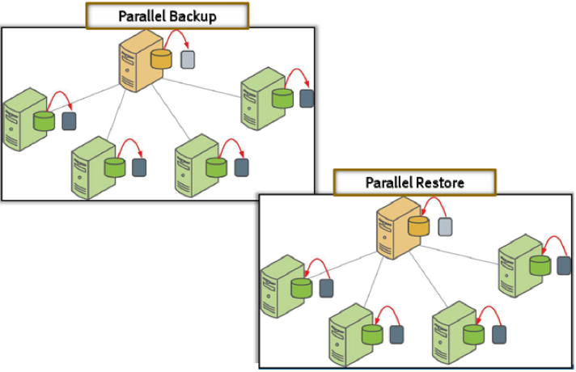

Petabyte Scale Data Warehousing - Greenplum
Backup and Restore
Agenda
- Overview
- Backup command
- Restore command
- Pivotal Greenplum components
- gpmanager
- gpcopy
Overview
Backup/Restore
- Uses COPY ... ON SEGMENT
- data is backed up as CSV text only (no COPY command)
- COPY command is visible from pg_stat_activity
gpbackup and gprestore source code available:

Greenplum Master
Seg1
SegN
. . .

COPY <table> TO <location> ON SEGMENTS;
Backup and Restore
gpbackup
gpbackup - Overview
A few details
- Acquires an ACCESS SHARE lock on each table that is backed up
- Reduces lock impact
- Runs in a transaction
- combination of ACCESS SHARE and MVCC allows for DML operations to continue without affecting the backup
- Ability to run several backups in parallel or to use several threads (with the option --jobs)
- Improves the overall performance
- A sub-directory per backup (timestamp key)
- Makes it easier to rollup backups
gpbackup - Overview
A few more details
- Ability to see the progress (number of tables) of the backup and the restore
- Easier monitoring
- More accurate estimate of the end of backup
- Dump only metadata or only data
- A single tool to extract DDL and/or data
- Option to define the compression level
- One file per table (or partition) and per segment
- Or create one file per segment (--single-data-file option)
- Incremental backup
- You can override the date of the last incremental (--from-timestamp option)
- Currently only supported for append-optimized tables
- Plugin architecture (--plugin-config option) to support external storage
- DDBoost for Data Domain
- S3-like storage (i.e. Dell ECS, Minio, Amazon S3, ...)
gpbackup - Command options
gpbackup --dbname database_name
[--backup-dir directory]
[--compression-level level]
[--data-only]
[--debug]
[--exclude-schema schema_name]
[--exclude-table schema.table]
[--exclude-table-file file_name]
[--include-schema schema_name]
[--include-table schema.table]
[--include-table-file file_name]
[--incremental [--from-timestamp backup-timestamp]]
[--jobs int]
[--leaf-partition-data]
[--metadata-only]
[--no-compression]
[--plugin-config config_file_location]
[--quiet]
[--single-data-file]
[--verbose][--version][--with-stats]
[--help]gpbackup - Example output
gpbackup --dbname gplab --backup-dir /home/gpadmin/backup
20190613:20:11:40 gpbackup:gpadmin:mdw:003717-[INFO]:-Starting backup of database gplab
20190613:20:11:42 gpbackup:gpadmin:mdw:003717-[INFO]:-Backup Timestamp = 20190613201140
20190613:20:11:42 gpbackup:gpadmin:mdw:003717-[INFO]:-Backup Database = gplab
20190613:20:11:42 gpbackup:gpadmin:mdw:003717-[INFO]:-Gathering table state information
20190613:20:11:42 gpbackup:gpadmin:mdw:003717-[INFO]:-Acquiring ACCESS SHARE locks on tables
Locks acquired: 1 / 1 [================================================================] 100.00% 0s
20190613:20:11:42 gpbackup:gpadmin:mdw:003717-[INFO]:-Gathering additional table metadata
20190613:20:11:42 gpbackup:gpadmin:mdw:003717-[INFO]:-Metadata will be written to
/home/gpadmin/backup/gpseg-1/backups/20190613/20190613201140/gpbackup_20190613201140_metadata.sql
20190613:20:11:42 gpbackup:gpadmin:mdw:003717-[INFO]:-Writing global database metadata
20190613:20:11:42 gpbackup:gpadmin:mdw:003717-[INFO]:-Global database metadata backup complete
20190613:20:11:42 gpbackup:gpadmin:mdw:003717-[INFO]:-Writing pre-data metadata
20190613:20:11:42 gpbackup:gpadmin:mdw:003717-[INFO]:-Pre-data metadata backup complete
20190613:20:11:42 gpbackup:gpadmin:mdw:003717-[INFO]:-Writing post-data metadata
20190613:20:11:42 gpbackup:gpadmin:mdw:003717-[INFO]:-Post-data metadata backup complete
20190613:20:11:42 gpbackup:gpadmin:mdw:003717-[INFO]:-Writing data to file
Tables backed up: 1 / 1 [==============================================================] 100.00% 0s
20190613:20:11:43 gpbackup:gpadmin:mdw:003717-[INFO]:-Data backup complete
20190613:20:11:44 gpbackup:gpadmin:mdw:003717-[INFO]:-Found neither
/usr/local/greenplum-db/./bin/gp_email_contacts.yaml nor /home/gpadmin/gp_email_contacts.yaml
20190613:20:11:44 gpbackup:gpadmin:mdw:003717-[INFO]:-Email containing gpbackup report
/home/gpadmin/backup/gpseg-1/backups/20190613/20190613201140/gpbackup_20190613201140_report]
will not be sent
20190613:20:11:44 gpbackup:gpadmin:mdw:003717-[INFO]:-Backup completed successfullyDBNAME is required
gpbackup - Output Files
ls -l /home/gpadmin/backup/gpseg-1/backups/20190613/20190613201140/
total 16
-r--r--r-- 1 gpadmin gpadmin 615 13 juin 20:11 gpbackup_20190613201140_config.yaml
-r--r--r-- 1 gpadmin gpadmin 3557 13 juin 20:11 gpbackup_20190613201140_metadata.sql
-r--r--r-- 1 gpadmin gpadmin 1478 13 juin 20:11 gpbackup_20190613201140_report
-r--r--r-- 1 gpadmin gpadmin 3986 13 juin 20:11 gpbackup_20190613201140_toc.yamlOn the master:
On the segments:
ssh sdw1 ls -l /home/gpadmin/backup/gpseg0/backups/20190613/20190613201140
total 2824
-rw------- 1 gpadmin gpadmin 2889418 13 juin 20:11 gpbackup_0_20190613201140_61917.gz
-rw------- 1 gpadmin gpadmin 2902423 13 juin 20:11 gpbackup_1_20190613201140_61917.gz
....gpbackup - Report
more /home/gpadmin/backup/gpseg-1/backups/20190613/20190613201140/gpbackup_20190613201140_report
Greenplum Database Backup Report
Timestamp Key: 20190613201140
GPDB Version: 5.17.0 build commit:fc9a9d4cad8dd4037b9bc07bf837c0b958726103
gpbackup Version: 1.10.0
Database Name: gplab
Command Line: gpbackup --dbname gplab --backup-dir /home/gpadmin/backup
Compression: gzip
Plugin Executable: None
Backup Section: All Sections
Object Filtering: None
Includes Statistics: No
Data File Format: Multiple Data Files Per Segment
Incremental: False
Start Time: 2019-06-13 20:11:40
End Time: 2019-06-13 20:11:44
Duration: 0:00:04
Backup Status: Successgpbackup - History
more /data1/master/gpseg-1/gpbackup_history.yaml
backupconfigs:
- backupdir: /home/gpadmin/backup
backupversion: 1.10.0
compressed: true
databasename: gplab
databaseversion: 5.17.0 build commit:fc9a9d4cad8dd4037b9bc07bf837c0b958726103
dataonly: false
deleted: false
excluderelations: []
excludeschemafiltered: false
excludeschemas: []
excludetablefiltered: false
includerelations: []
includeschemafiltered: false
includeschemas: []
includetablefiltered: false
incremental: false
leafpartitiondata: false
...Backup and Restore
gprestore
gprestore - Overview
A few details
-
Restores to a database with the same name (--redirect-db option is available)
- If target db does not exist, use --create-db option
-
Database system objects are automatically included in a gpbackup backup set
- Use --with-globals to restore (default is to not restore globals)
- Ability to run several restores in parallel or to use several threads (with the option --jobs)
- Improves the overall performance
gprestore - Overview
A few more details
-
One of these codes is returned after gprestore completes.
- Restore completed with no problems.
- Restore completed with non-fatal errors. See log file for more information.
- Restore failed with a fatal error. See log file for more information.
- Can send status email notifications after a back up operation completes
gpbackup - Command options
gprestore --timestamp YYYYMMDDHHMMSS
[--backup-dir directory]
[--create-db]
[--debug]
[--exclude-schema schema_name]
[--exclude-table schema.table]
[--exclude-table-file file_name]
[--include-schema schema_name]
[--include-table schema.table]
[--include-table-file file_name]
[--data-only | --metadata-only]
[--jobs int]
[--on-error-continue]
[--plugin-config config_file_location]
[--quiet]
[--redirect-db database_name]
[--verbose]
[--version]
[--with-globals]
[--with-stats]
[--help]gprestore - Example output
gprestore --backup-dir /home/gpadmin/backup --timestamp 20190613201140 --create-db
20190614:08:03:11 gprestore:gpadmin:mdw:063015-[INFO]:-Restore Key = 20190613201140
20190614:08:03:12 gprestore:gpadmin:mdw:063015-[INFO]:-Creating database
20190614:08:03:28 gprestore:gpadmin:mdw:063015-[INFO]:-Database creation complete for: gplab
20190614:08:03:28 gprestore:gpadmin:mdw:063015-[INFO]:-Restoring pre-data metadata
Pre-data objects restored: 6 / 6 [=====================================================] 100.00% 0s
20190614:08:03:29 gprestore:gpadmin:mdw:063015-[INFO]:-Pre-data metadata restore complete
Tables restored: 1 / 1 [===============================================================] 100.00% 2s
20190614:08:03:32 gprestore:gpadmin:mdw:063015-[INFO]:-Data restore complete
20190614:08:03:32 gprestore:gpadmin:mdw:063015-[INFO]:-Restoring post-data metadata
20190614:08:03:32 gprestore:gpadmin:mdw:063015-[INFO]:-Post-data metadata restore complete
20190614:08:03:32 gprestore:gpadmin:mdw:063015-[INFO]:-Found neither
/usr/local/greenplum-db/./bin/gp_email_contacts.yaml nor /home/gpadmin/gp_email_contacts.yaml
20190614:08:03:32 gprestore:gpadmin:mdw:063015-[INFO]:-Email containing gprestore report
/home/gpadmin/backup/gpseg-1/backups/20190613/20190613201140/gprestore_20190613201140_20190614080311_report
will not be sent
20190614:08:03:32 gprestore:gpadmin:mdw:063015-[INFO]:-Restore completed successfullyTIMESTAMP is required
gprestore - Report
more /home/gpadmin/backup/gpseg-1/backups/20190613/20190613201140/gprestore_20190613201140_20190614080311_report
Greenplum Database Restore Report
Timestamp Key: 20190613201140
GPDB Version: 5.17.0 build commit:fc9a9d4cad8dd4037b9bc07bf837c0b958726103
gprestore Version: 1.10.0
Database Name: gplab
Command Line: gprestore --backup-dir /home/gpadmin/backup --timestamp 20190613201140 --create-db
Start Time: 2019-06-14 08:03:11
End Time: 2019-06-14 08:03:32
Duration: 0:00:21
Restore Status: SuccessBackup and Restore
Pivotal Greenplum utilities
gpbackup-manager
Pivotal Greenplum
-
Manages backup sets created using the gpbackup utility
- list backups
- display a report for a backup
- delete a backup
- Can also encrypt passwords to store in a DD Boost plugin configuration file.
gpadmin@mdw:$ gpbackup_manager list-backups
timestamp date database type object filtering plugin duration date deleted
20190719092809 Fri Jul 19 2019 09:28:09 sales full include-schema 01:49:38 Fri Jul 19 2019 09:30:34
20190719092716 Fri Jul 19 2019 09:27:16 sales full exclude-schema 01:38:45
20190719092609 Fri Jul 19 2019 09:26:09 sales data-only 01:07:22
20190719092557 Fri Jul 19 2019 09:25:57 sales metadata-only 00:00:19
20190719092530 Fri Jul 19 2019 09:25:30 sales full 01:50:27$ gpbackup_manager delete-backup 20190620145126
Are you sure you want to delete-backup 20190620145126? (y/n)y
Deletion of 20190620145126 in progress.
Deletion of 20190620145126 complete.gpcopy - data transfer utility
Pivotal Greenplum
- High-performance and standalone utility to copy metadata and/or data from one Greenplum database to another Greenplum database
- Transfer one or more full databases, or one or more database tables
- A full database transfer includes the database schema, table data, indexes, views, roles, user-defined functions, resource queues, and resource groups.
- If a copied table or database does not exist in the destination cluster, gpcopy creates it automatically, along with necessary indexes.
- Supports migrations between Greenplum databases where source and destination systems have:
- a different number of segment instances
- different GreenPlum versions
- Provides detailed reporting and summary information about all aspects of the copy operation
- Allows the source table data to change while the data is being copied (a lock is not acquired on the source table when data is copied)
- Includes the --truncate-source-after option to help migrate data from one Pivotal Greenplum Database system to another on the same hardware, requiring minimal free space available
gpcopy
Pivotal Greenplum
- Pre-requisites:
- Network connection between all source and destination segments
- Parallel copy tasks denoted with --jobs option (default = 4)
- Validate the transfer at the end of the copy using:
- --validate count or --validate md5xor
gpcopy --source-host mytest --source-port 1234 --source-user gpuser
--dest-host demohost --dest-port 1234 --dest-user gpuser
--full --drop --validate count